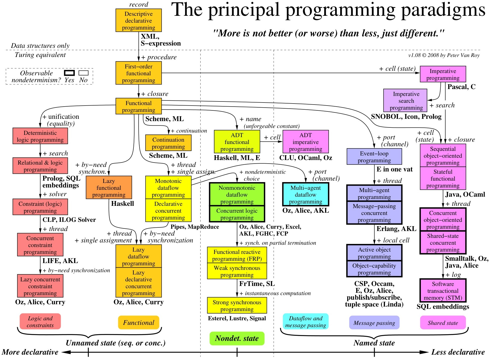
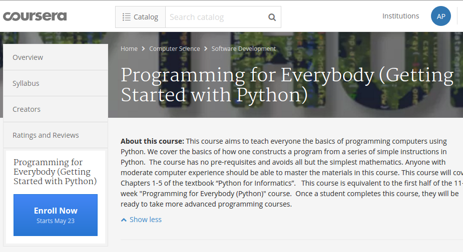

class: center, middle # Языки программирования # vs # языки общения [Артём Пеленицын](http://staff.mmcs.sfedu.ru/~ulysses/), [Мехмат ЮФУ](http://mmcs.sfedu.ru) --- # Программное обеспечение  --- # На самом деле…  .footnote[— бинарный код] --- # Как получают бинарный код ```haskell reportForADir :: FilePath -> IO WorkingDirReport reportForADir workingDir = do workingDirContents <- getAbsDirectoryContents workingDir studentDirs <- filterM isDir $ sort workingDirContents studentReports <- mapM studentDirReport studentDirs return $ WorkingDirReport studentReports studentDirReport :: FilePath -> IO StudentReport studentDirReport studentDir = do studentDirContents <- getAbsDirectoryContents studentDir let taskFiles = filter isLikeTaskFile $ sort studentDirContents fileReports <- mapM fileReport taskFiles return $ StudentReport (filename studentDir) fileReports fileReport :: FilePath -> IO FileReport fileReport file = do let taskId = taskNumFrom file sInFromTag <- (,) <$> readFile file sOut <- runFile file getVarFrom file >>= maybe (return $ NoVar taskId) (\varId -> let tag = (varId, taskId) in FileReport tag <$> checkSubmission (sInFromTag tag) sOut) ``` — исходный код на языке программирования --- # Языки программирования это сложно? # :( --- # «Только без паники» (Н. Хомский)  --- # Н. Хомский: «ЯПы проще»  * языки программирования → контекстно-свободные, * языки общения → контекстно-зависимые. --- # Считаем до 10 ```python i = 1 while i <= 10: print "Досчитали до %d" % (i) i += 1 ``` --- # Считаем до 10 ```python i = 1 while i <= 10: print "Досчитали до %d" % (i) i += 1 ``` # Сортируем ```haskell qsort [] = [] qsort (x : xs) = qsort (filter (< x) xs) ++ [x] ++ qsort (filter (>= x) xs) ``` --- # Сколько? ## Естественные языки: * Энциклопедия Британика 1911 г.: ~ 1000. * Каталог «Этнолог», 2009 г.: 6909. ## Языки программирования: * Википедия: ~ 500. * Другие источники: ~ 4000. --- ## Взаимосвязи  --- ## Взаимосвязи (ЯП)  --- # [#ВКШ](http://sunschool.mmcs.sfedu.ru/), Computing at School и Саймон Пейтон Джонс --- # Lifelong learning и революция MOOC > _ **Lifelong learning** is the ongoing, voluntary, and self-motivated pursuit of knowledge…_ — Wikipedia ### Ресурсы MOOC (Massive Open Online Courses) * coursera.org * edx.org * universarium.org * lektorium.tv --- # [Курс](https://www.coursera.org/learn/python) на Coursera 